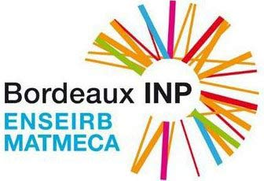
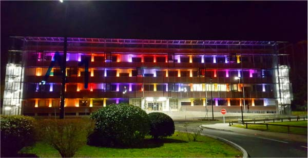
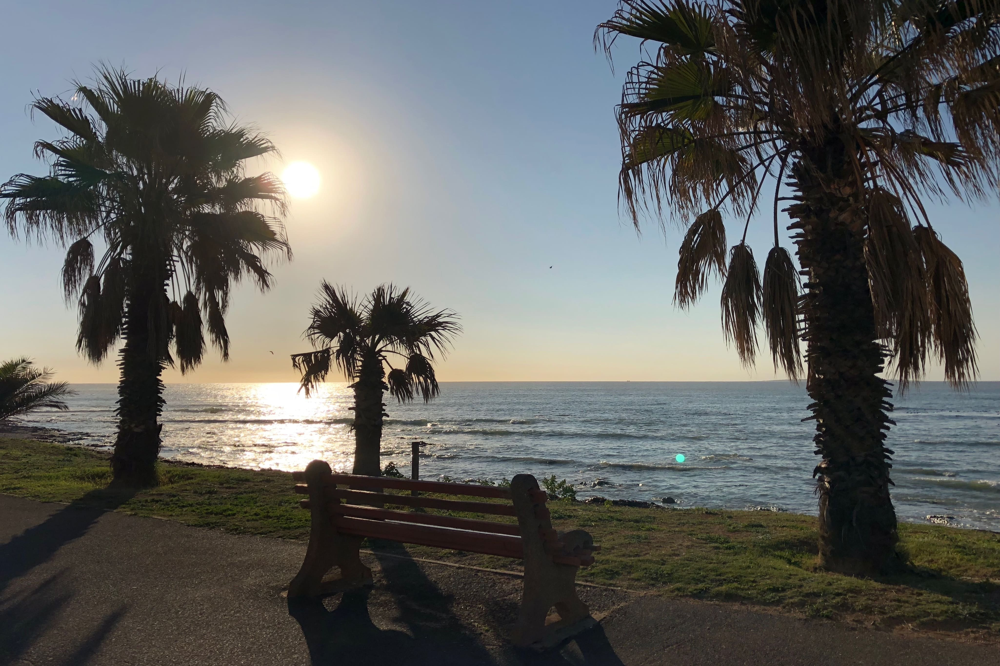
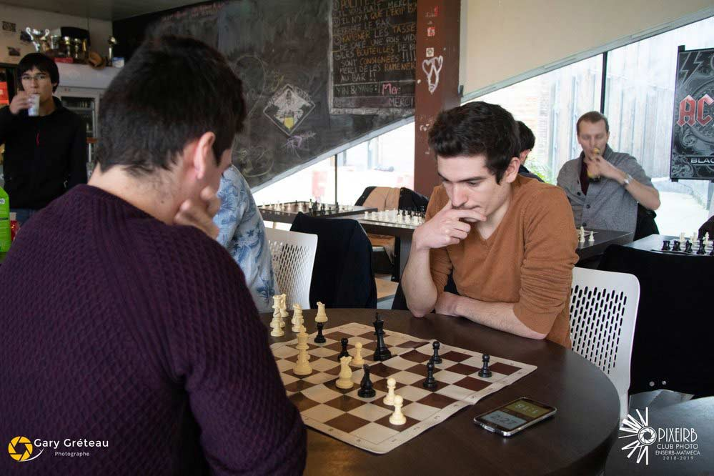

About me
- Jordan Sandri
- French
- jsandri@enseirb-matmeca.fr
- GitHub
Profile
Freshly graduated, I got my master's degree as a computer scientist. Wishing to expand my skills beyond what France could bring me, I carried out my internships and part of my studies abroad as an international engineer. I am currently looking for an opportunity to kick off my engineering career.
Education
Enseirb-Matmeca
Three years of engineering school in which I developed my computer science culture through various programming languages, graph, networks architecture, cryptology, database, data analysis lectures as well as my engineering culture through quality management, project management, finance, agile, scrum lectures.
Optional lectures
Dynamic Systems and Robotics, Machine and Deep Learning, Technological issues of aircraft maintenance.
Talence, Nouvelle-Aquitaine, France
2017 - 2020
Umeå University
The third year of engineering school is a year of specialization. I decided to set out for Sweden to specialize in cloud computing and intelligence artificial. It was a good opportunity to carry on with my quest as a world engineer as well.
Main lectures
Fundamentals of Artificial Intelligence, Artificial Intelligence - Methods and Applications (including machine, deep and reinforcement learning), Cloud Computing, Cognitive Interaction Design.
Umeå, Sweden
2019 - 2020
Lycée Paul Cézanne
In France, entering an engineering school requires passing a selective entrance examination for which we are prepared by way of intensive maths, physics, and chemistry courses for three years.
Aix-en-Provence, Provence-Alpes-Côte d'Azur, France
2014 - 2017
Lycée l'Olivier

I got my high school diploma in science called baccalaureate with distinction.
Marseille, Provence-Alpes-Côte d'Azur, France
2011 - 2014
Work Experience
EvaGroup
Cloud internship in which I deployed Elastic tools (Filebeat, Logstash, Elasticsearch, Kibana) on EC2 with AWS for network device(such as Cisco Asa), Radius, and Netflow logs allowing the company to check the status of its network and devices on dashboards.
Bugis, Singapore
June - August 2019 (3 months)
BNP Paribas
During my last month of internship at EvaGroup, I worked simultaneously at BNP Paribas. Accustomed to these tools for two months I installed Elastic tools on SIEM servers (Linux and Windows) in UAT (User Acceptance Testing), had Scrum meetings every morning, and wrote up the documentation for the production team.
Raffles Place, Singapore
August 2019 (1 month)
Stellenbosch University
My first internship as an engineering student in computer science. I learned java and coded the Carcassonne board game with a graphical interface. It was also my first steps in machine learning by making a binary classifier.
Stellenbosch, South Africa
July - August 2018 (2 months)
University Projects
Video Conversion Cloud Service
As part of the cloud computing course, in groups of three, we designed and implemented a scalable and fault-tolerant video conversion service on top of an Infrastructure-as-a-Service cloud from scratch. Using AWS services and its virtual machines, our service had to be able to scale up and down depending on its load, it had to be robust, that is to say, withstand some common failures such as a virtual machine killed. We also used monitoring tools to optimize our work.
Umeå, Sweden
November 2019 - January 2020
Arbalet Mesh

This project was carried out throughout the second year of engineering school. In groups of seven, we used mesh technology and ESP32 electronic cards in order to create a prototype and to make an existing project portable and adaptable to every building equipping windows with a card and a LED. In the end, anyone equipped with his smartphone can connect to the wi-fi access point and play games on the building facade such as Tetris, snake, or just drawing.
Talence, Nouvelle-Aquitaine, France
September 2018 - June 2019
Skills
Programming Languages
I have learned and practiced through engineering school projects all these languages for three years.
C C++ Java Python Bash Assembly Language(x86) Matlab SQL ...
Cloud Computing
My internships and my exchange in sweden shaped my cloud knowledge combining theory and projects.
AWS Services Ansible Elastic Stack Docker Monitoring Tools Webhook
Artificial Intelligence
An Othello AI, a handwriting recognition ANN, or mapping an area with a robot are projects I made.
AI Machine Learning Deep Learning Reinforcement Learning
Web Development
I started out web alone during Covid-19 lockdown. I am now able to design a full responsive website like this.
HTML5 CSS3 SCSS Javascript JQuery Bootstrap
Other Tools
I also learned plenty of various tools in the course of these three years of engineering school.
RabbitMQ Redis Oracle MySQL Gradle CMake Git ...
Operating Systems
I usually develop on MacOS and use Linux at school or in internship. However, I am able to adapt to any operating system.
MacOs Linux Windows
Project Management
Engineering culture is crucial, that is why I had classes in management, quality, finance, and Scrum and Agile methods.
Agile Scrum Management Finance
Languages
Native French speaker, fluent in English, fairly good command of Italian, and basic knowledge in Chinese.
French English Italian Chinese
Other Skills
Honest, Curious, Patient, Pedagogical, Adaptable, ease of communication, Positive behavior even in critical situations.
Hobbies

Travelling
Through my quest as an international engineer, I traveled the world. From the depths of the savannah of Zimbabwe to the polar nights of the north cape, I discovered breathtaking places and met incredible people.
Music
I have been playing music since childhood. More than ten-year guitar practice, ukulele, and drums for pleasure. I played in multiple bands and performed some concerts for the engineering school music club or a small audience.

Chess
Chess has become a passion recently. I have played regularly for 2 years now and learned on my own. I opened up the chess club of my engineering school, taught, and organized some tournaments between students.
Cinema
I was brought up by the cinema very early. First off, enthralled and fascinated about the image that cinema gives off wanting to watch all the classics. Today, also interested in actors, their filmography, critiques.
Hackathon
I participated in the Hackathon of Bordeaux two times in a row. Gathering students from around the world for an entire night in order to achieve a project was a real occasion to learn new languages and experience a genuine adventure.
BMX
My brand new pastime. It is an indefinable real pleasure to manage to perform basic tricks in the street or in a bowl. Unfortunately, I cannot bring my bike on my adventures. Finally, all I want is to ride my bicycle where I like.